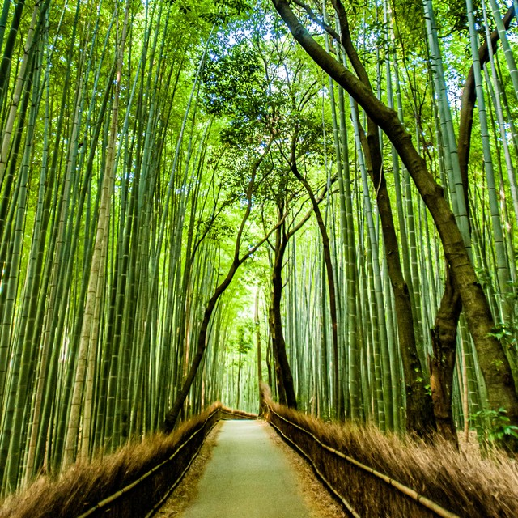

We zijn ook naar een heel cool bamboo bos gegaan. Het bos was echt super mooi, maar
het was snel donker geworden toen we daar aankwamen dus twee van onze groepsgenoten werden
een beetje bang toen. Dat kwam ook omdat het bos op een berg groeide en wij al best hoog in de berg zaten.
Het uitzicht was wel super mooi daar. We hadden ook een deel van het bos gevonden waar blijkbaar
apen te vinden waren. De dames van de groep wouden daar niet in omdat ze bang waren, maar een andere
jongen en ik (ook de enige jongens trouwen) wouden wel heel graag dat deel in. Dus dat is ook wat we deden.